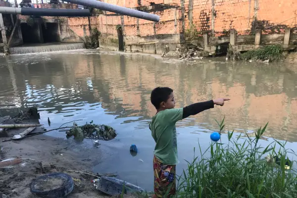
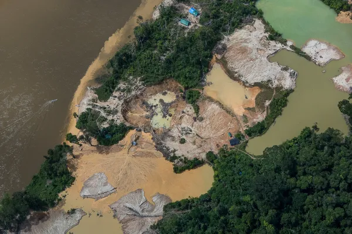

A Manaus que (quase) ninguém quer enxergar
No início do mês de abril de 2022, o Instituto Trata Brasil, em parceria com a GO Associados, publicou o ranking de saneamento das cidades brasileiras, que objetiva avaliar questões inerentes à infraestrutura urbana, como coleta/tratamento de esgoto e potabilidade das águas. Dentre os cem maiores municípios brasileiros analisados, Manaus aparece entre os 20 piores, na 89ª posição. A ausência de saneamento básico na cidade está intrinsecamente ligada ao crescimento desordenado que aconteceu a partir da implantação da Zona Franca de Manaus, entre meados do fim da década de 1960 e início de 1970. Com a criação da área industrial, a cidade recebeu milhares de novos moradores, principalmente do oeste paraense e da região Nordeste, que enxergavam na capital do Amazonas a possibilidade de ascender na pirâmide social No presente, mais de cinquenta anos depois, a cidade tem mais de 2 milhões de habitantes e milhares de pessoas estabelecidas em situação de risco, como Lindete de Sousa, 58, que mora às margens de um dos braços do igarapé do Mindu – o maior da cidade. Natural de Santarém (Pará), Lindete mora há 25 anos em Manaus, onde criou os seus três filhos, que chegaram ainda pequenos no bairro Jorge Teixeira, localizado na periferia da cidade. Lindete de Sousa, uma das entrevistadas, no portão de sua casa. Ao fundo é possível ver o igarapé do Mindu. Foto: Beatriz Oliveira “A gente se acostuma (citando a convivência com o igarapé poluído)… não tem para onde correr. Já perdemos muitas coisas por conta da subida da água em períodos de chuva. […] “Vem muita gente aqui, mas resolver que é bom, não resolvem”, conta a senhora sentada no pátio de sua casa referindo-se ao abandono por parte dos governantes. Lindete fala, ainda, sobre as promessas feitas aos moradores: “No final de fevereiro prometeram que iriam tirar a gente daqui – através de um novo programa do Governo –, porque parece que o Prosamim [Programa Social e Ambiental dos Igarapés de Manaus] acabou. Estamos esperando, mas até agora nada”. Em resposta ao contato estabelecido pela equipe de reportagem, a Secretaria de Comunicação Social do Amazonas (Secom) afirmou que o programa em questão é realizado pelo Governo do Amazonas e segue em franca execução. Já a Unidade Gestora de Projetos Especiais, a UGPE, que é a responsável pelo Prosamim, informou que o local em questão (Mindu) não é área de abrangência do programa (Leia a nota da UGPE na íntegra). Criado em 2003 pelo governo do Estado do Amazonas com o objetivo de melhorar a qualidade de vida da população que mora nos Igarapés, o Prosamim (Programa Social e Ambiental dos Igarapés de Manaus) trabalha para deslocar os cidadãos das margens dos igarapés. Em quase duas décadas de existência, mais de 78 mil pessoas foram retiradas de áreas alagadiças. No entanto, segundo a própria UGPE, ‘’o programa não trata da cidade como um todo’’. A professora Adoréa Rebello, doutora em Geografia Física pela Universidade Federal do Rio de Janeiro (UFRJ), comenta sobre o Programa Social e Ambiental dos Igarapés de Manaus. “A proposta foi boa, mas me parece que não vingou. Ele, o Prosamim, não possui sustentabilidade ambiental. O modelo é um desrespeito ao cidadão, poderia ser mais digno. Os parques [urbanos], provenientes do Prosamim, estão sem função urbana. Infelizmente, é isso, o programa não resolveu muito. Mas, pelo menos, algumas pessoas foram retiradas das situações de risco de inundações, incêndios e doenças de veiculação hídrica”, aponta a professora, que ministra aulas de Geografia na Universidade Federal do Amazonas (Ufam).
Destruição de Terras Indígenas pelo garimpo cresceu quase 500% em dez anos
A área ocupada pelo garimpo dentro de Terras Indígenas cresceu 495% entre 2010 e 2020, sendo que os maiores saltos foram registrados principalmente durante o governo Bolsonaro. Os dados fazem parte de um levantamento realizado pelo MapBiomas e divulgado nesta terça-feira (19), Dia da Luta e Resistência dos Povos Indígenas, uma adaptação ao Dia do Índio. Os números levantados pela organização mostram saltos sucessivos. O desmatamento por mineração em TI registrado em 2016 foi de 58,43 hectares. Em 2018 ele já estava em 1.451 hectares e, no ano seguinte, 2019, a cifra chegou a 2.975 hectares. Em 2021, a destruição da floresta em Territórios Indígenas foi de 2.409 hectares. A atividade da mineração e do garimpo são proibidas por lei dentro de TIs. Desde que chegou ao poder, Jair Bolsonaro tenta emplacar mudanças na legislação, de forma a liberar a atividade no interior desses territórios. A ofensiva mais concreta é o Projeto de Lei 191/2020, de autoria do Poder Executivo, que autoriza a mineração e a construção de hidrelétricas em TIs, inclusive nas que têm indígenas isolados, e legaliza o garimpo dentro dessas áreas. Atualmente, o PL tramita em regime de urgência na Câmara. Segundo o MapBiomas, as maiores áreas de garimpo em Terras Indígenas estão em território Kayapó, com 7.602 hectares destruídos, e Mundukuru, com 1.592 hectares de desmatamento entre 2010 e 2020. Ambos estão localizados no estado do Pará. O território Yanomami, localizado nos estados do Amazonas e Roraima, acumulou 414 hectares de desmatamento por mineração no período. No último final de semana, uma operação do Ibama e Polícia Federal recolheu equipamentos de garimpeiros que invadiram a aldeia Karimãa, na Terra Indígena Xipaya, no sudoeste do Pará.